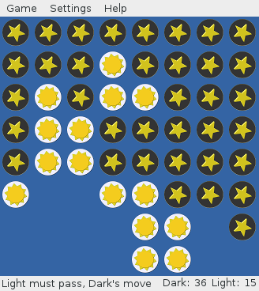
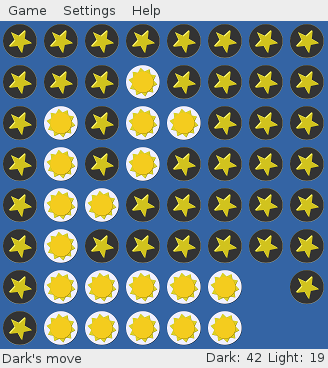
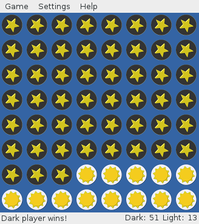

黑白棋
我们往往困惑于人性，困惑于社会的形形色色的现象，其实我觉得无论是人性还是社会就如一场黑白棋   
如果下过黑白棋的朋友应该知道下黑白棋有一个技巧，就是“金角银边臭肚皮”。这点和围棋的特点有一些类似。那么为什么是金角银边臭肚皮呢？因为，谁控制了边，就可以进一步在中间战场的博弈中占上风，谁抢到了角那么谁就进一步控制了边，继而控制中间战场，从人性上看，什么是人性的金角呢？我认为是每个人的人生观、世界观、价值观，这也就是为什么各个团体都在不遗余力的拉拢青少年的缘故，因为年轻人大多处在青春躁动期，处于一个可善可恶的可塑造期，这时候的三观形成，对其一生会有深远的影响，不可不慎。那么什么是人性的银角呢？我认为是我们每个人每天重复的具体事情，也是我们每一天工作生活的习惯，这些习惯的养成就会渐渐的直接影响到我们的每一项具体的行为，我们每天睁开眼睛所思所想最后决定我们每天的所作所为，最后博弈的结果会让我成一个好人，或者一个坏人，严格的说一个纯粹的好人和坏人都是不存在，大多数人都是哪方面更强、更多而已。
从原理上，洗脑就是在改变人的人生观、世界观、价值观，改变人的日常习惯，最后影响到人的每一天的行为和情绪。最后导致的结果往往都会有一个明显的倾向。这就是很多人日常看到的现象世界中的种种问题。所以严格的说，这个世界上没有坏人，只有病人，只是很多人并不认为自己有病而已。
文章的开始我提到的“我觉得无论是人性还是社会就如一场黑白棋”。事实上社会也是如此。从宏观的角度上看，我们每个人都是棋子，我们的人性自我博弈的结果将导致社会的巨大变化，同时我们也每时每刻收到社会上的其他人的影响。所以有一句概括的很好。“一个国家最不活跃的人群，为占大多数的中间层次。他们是在城市工作和乡间务农的正派老百姓。然而，他们的命运却受分据社会光谱两头的少数人——最优秀的人和最低劣的人——所左右。http://book.douban.com/review/5123821/”。所以我认为一个有自己的理想和抱负的年轻人，要记得这句话，“士不可不弘毅，任重而道远”。一个读书人，一个有志于为国家和人民服务的人，要知道自己是有社会使命的，要把改良社会风气当作自己的日常生活的一部分，社会就在我们每一个人的一言一行，所思所想中，你可以改变你自己，也可以影响整个社会。你该怎么选择呢？
同时，由于这个规律的存在，让我们看到了一线生机，那么就是人是可以改变的，可以教育的，可以影响的，是可塑造的，进而社会也有风气变好的可能。所以我们要努力。面对可善可恶的人性，你该怎么办？打算怎样选择？会怎样做呢？
© 2011~2014 心灵家园（退教心理咨询）